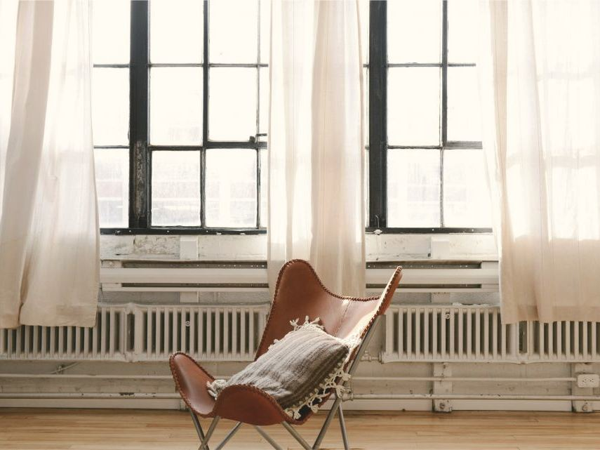
1930-luvun kerrostalokoti, jonka pinnat palautettiin kalkkimaalilla ja pellavalla.78 m²
01
Studio Utu on turkulainen sisustussuunnittelun studio. Suunnittelemme koteja, huviloita ja pieniä liiketiloja – rauhallisia, kosketeltavia ja sinun näköisiäsi.
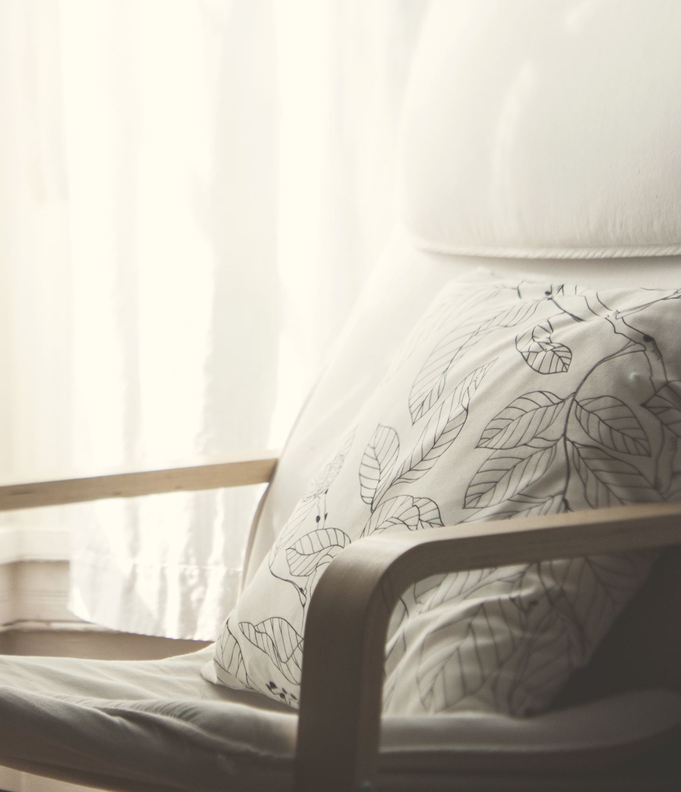
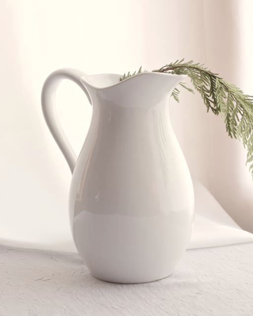
Koti Port Arthur olohuone, 2025
01Ajatus
Hyvä tila tuntuu ennen kuin sen näkee. Siksi aloitamme valosta, pinnoista ja siitä, miten sinä elät – emme trendeistä. Lopputulos on hiljainen, lämmin ja pitkäikäinen.
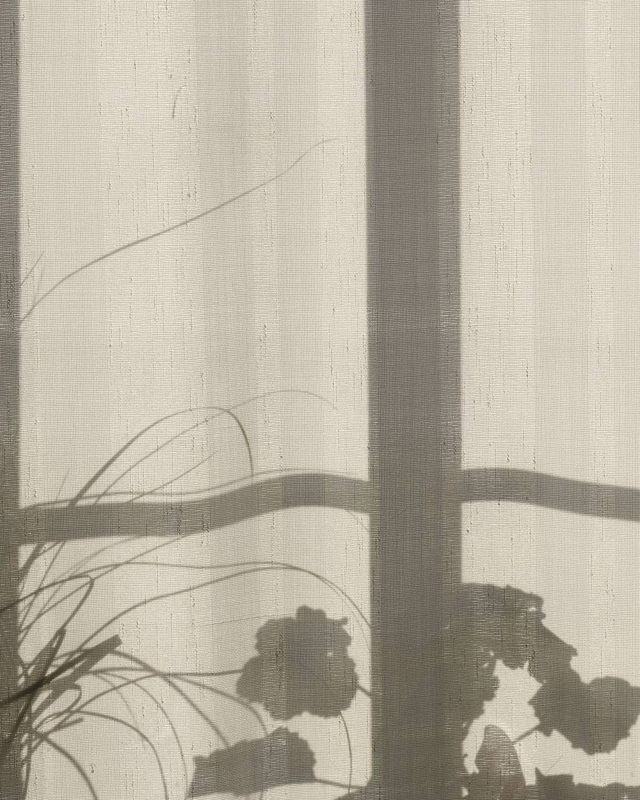
Katsomme, mistä valo tulee aamulla ja minne se jää illalla. Vasta sitten siirrämme huonekaluja.
Pellava, kalkki, savi ja öljytty puu. Valitsemme pintoja, jotka kestävät käyttöä ja kaunistuvat iän myötä.
Säilytämme sen, mikä toimii, ja hankimme vain sen, mikä puuttuu. Kaunis koti ei vaadi kaikkea uutta.
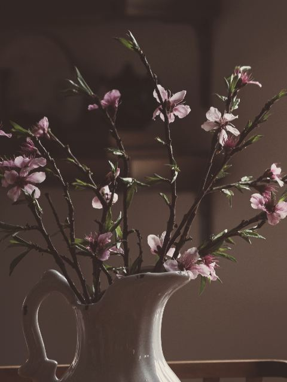
02Työt

1930-luvun kerrostalokoti, jonka pinnat palautettiin kalkkimaalilla ja pellavalla.78 m²
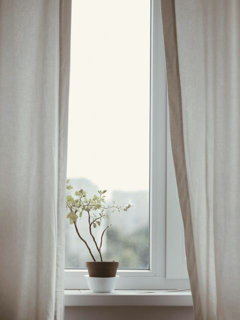
Kesähuvila, joka avattiin taas merelle. Vanhat lattialaudat jäivät.140 m²
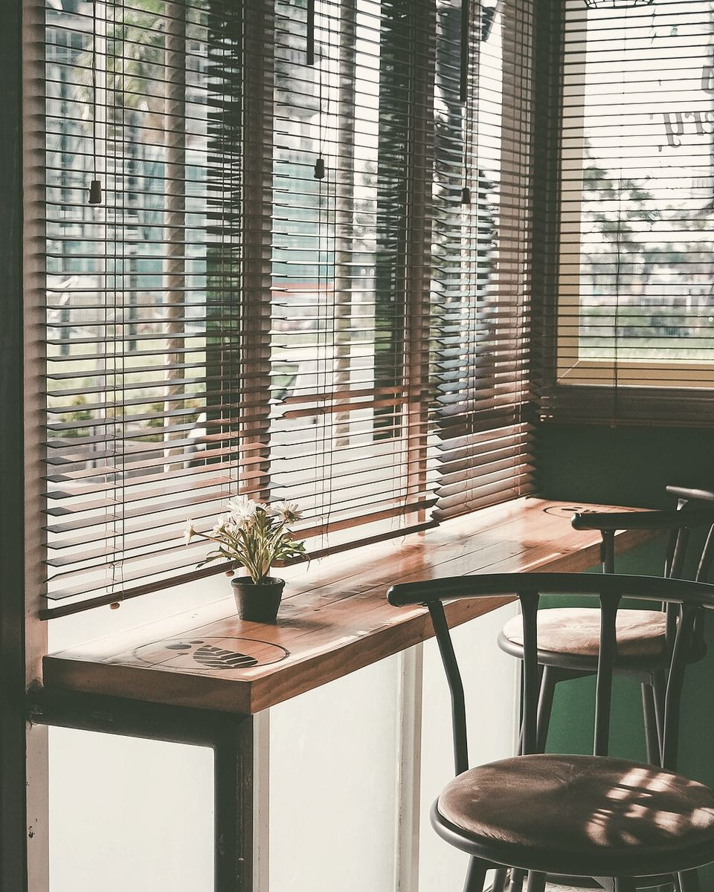
Jokirannan kahvila, jossa tammi ja kalkkirappaus luovat hitaan tunnelman.48 paikkaa
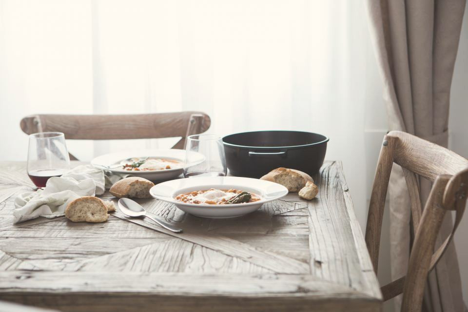
Puutalon alakerta, joka avattiin keittiöstä puutarhaan asti.112 m²
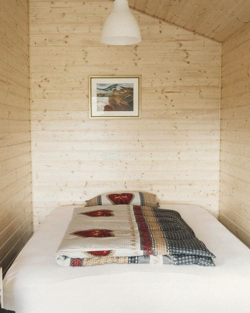
Saaristomökki kolmesta aineesta: kuusesta, pellavasta ja kivestä.46 m²
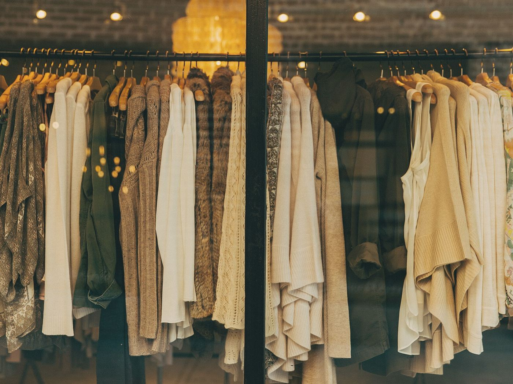
Pieni vaate- ja keramiikkaliike, jossa tuotteet saavat tilaa hengittää.38 m²
03Lähikuva
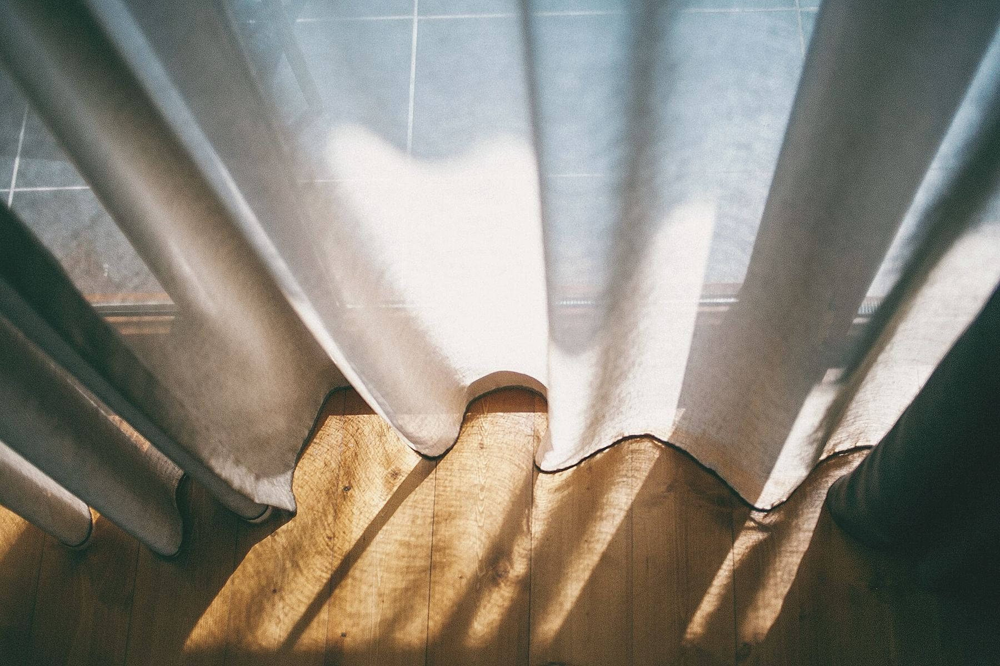
Ilta-aurinko länsihuoneen pellavaverhon alla.
Ruissalo, Turku — 2024
Sata vuotta vanha huvila oli jaettu pieniksi, hämäriksi huoneiksi. Avasimme näkymän merelle ja annoimme vanhan rungon näkyä.
Seinät saivat kalkkimaalin, joka elää valon mukana aamusta iltaan. Lattialaudat hiottiin ja öljyttiin, verhot ommeltiin karkeasta pellavasta. Kalusteista puolet on huvilan omia, kunnostettuja.
Värit haettiin rannalta: hiekka, kaislikko, märkä kivi ja syksyn ruoste.
04Materiaalit
Kokoamme jokaiseen kohteeseen materiaalitaulun oikeista näytteistä. Kokeile itse: valitse pinnat, joista pidät, niin näet niistä syntyvän paletin.
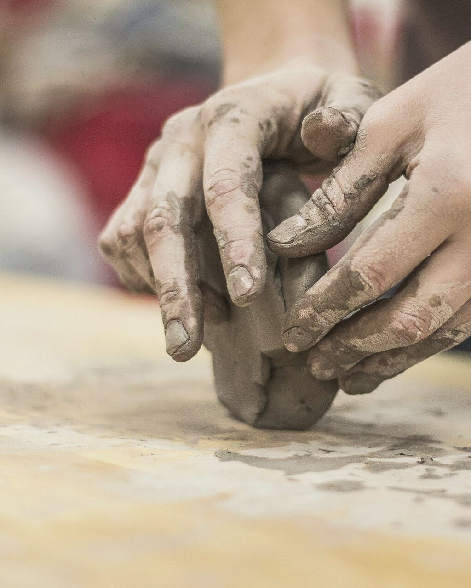
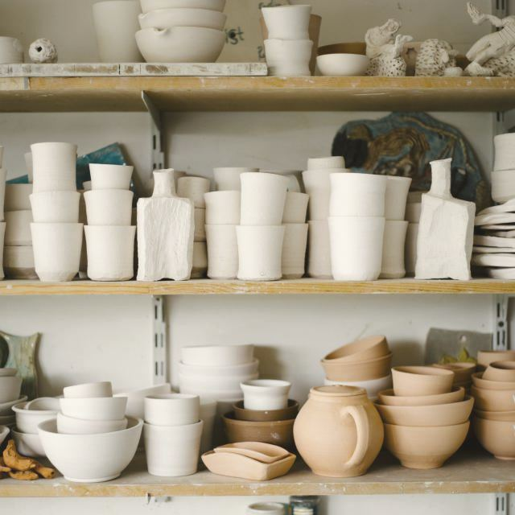
Oma palettiValitse kahdesta neljään pintaa.
Paletti on vielä tyhjä.
05Palvelut
Kahden tunnin käynti kotonasi. Käymme läpi tilat, valon ja kalusteet, ja saat selkeät suositukset muistiinpanoina.
Alkaen290 €kertahinta
Seinävärit, lattiat, tekstiilit ja pinnat yhtenä kokonaisuutena. Saat materiaalitaulun oikeina näytteinä.
Alkaen890 €per kohde
Suunnittelemme tilan pohjasta viimeiseen valaisimeen: tilajärjestely, kiintokalusteet, valaistus ja sisustus.
Alkaen3 900 €tai 45 € / m²
Hankimme kalusteet, valaisimet ja tekstiilit puolestasi ja huolehdimme toimituksista. Sinä saat ammattilaishinnat.
Alkaen85 € / htai sovittu kokonaishinta
Hinnat sisältävät arvonlisäveron. Matkat Turun seudun ulkopuolelle laskutamme erikseen. Liiketiloista teemme aina erillisen tarjouksen.
06Prosessi
Hidas alku säästää aikaa myöhemmin. Jokainen projekti kulkee samat viisi vaihetta, oli kyse yhdestä huoneesta tai koko talosta.
Maksuton puhelu, jossa kuulemme toiveesi, budjettisi ja aikataulusi.
30 min
Tulemme paikalle, mittaamme ja katsomme, miten valo liikkuu tilassa.
1 viikko
Saat tilasuunnitelman, materiaalitaulun ja kustannusarvion.
2–4 viikkoa
Hankinnat, tekijät ja aikataulu. Me pidämme langat käsissä.
1–3 kuukautta
Stailaamme tilan valmiiksi. Sinä tuot vain kahvin.
1 päivä
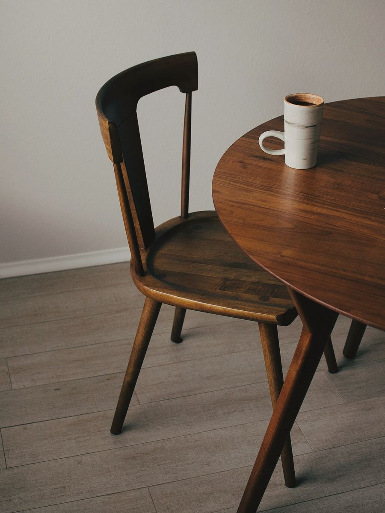
Emme tienneet kaipaavamme hiljaisuutta, ennen kuin asuimme siinä.
07Yhteys
Ensimmäinen keskustelu on aina maksuton. Kerro lyhyesti tilastasi, niin ehdotamme sopivan tavan edetä.